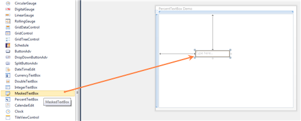

The steps to create a MaskedTextBox by using Visual Studio in XAML are as follows:
1. Create a new application in Visual Studio.
2. In the Visual Studio Toolbox, click the Syncfusion WPF Toolbox tab and select MaskedTextBox.
3. Drag and drop the MaskedTextBox to Design View, to add the MaskedTextBox to the application.

Figure 670: Control added to Design View
4. On the Properties window, customize the properties of the MaskedTextBox.
|
XAML |
|
<Window x:Class="WpfApp.MainWindow" xmlns="http://schemas.microsoft.com/winfx/2006/xaml/presentation" xmlns:x="http://schemas.microsoft.com/winfx/2006/xaml" Title="PercentTextBox Demo" Height="367" Width="492" xmlns:syncfusion="http://schemas.syncfusion.com/wpf">
<Grid x:Name="LayoutRoot"> <syncfusion:MaskedTextBox Height="23" HorizontalAlignment="Left" Margin="128,128,0,0" Name="maskedTextBox1" VerticalAlignment="Top" Width="120" /> </Grid> </Window> |

Figure 671: MaskedTextBox
See Also
Creating a MaskedTextBox by using Expression Blend
Creating a MaskedTextBox by using C#